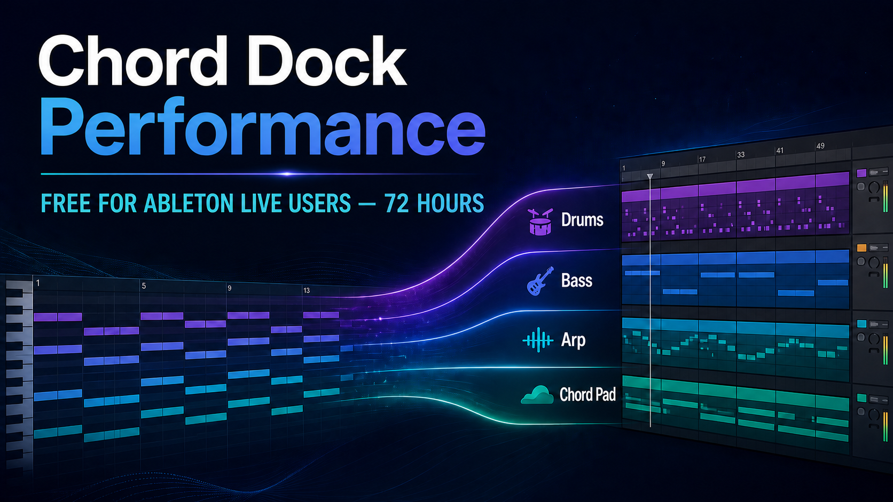

Arranger Setup
Build patterns from a progression
Create and edit Drums, Bass, Arp, and Chord Pad patterns for each section of your song.
For Ableton Live users
Claim a free Chord Dock Performance license for 72 hours, then try the workflow in your own Ableton Live set: build a progression, turn it into a four-part arrangement, and play every part with the instruments you already use.
For eligible Ableton Live users who do not already own a paid Chord Dock edition. Lite users are welcome.
August 14, 13:00 UTC — August 17, 13:00 UTC

Actual Chord Dock interface
These are the real Performance Edition workspaces you will use in your own project: first build the parts for each section, then see them all together and play the arrangement.
Arranger Setup
Create and edit Drums, Bass, Arp, and Chord Pad patterns for each section of your song.

Performance Page
See every part at once, switch patterns with pads, and turn your progression into a living arrangement.
The Ableton Live workflow
Chord Dock helps you shape the harmonic plan. Performance Edition adds Arranger Mode, where that progression becomes Drums, Bass, Arp, and Chord Pad parts. The bundled ChordPart receiver then lets each part live on its own Ableton track.
01 — HARMONY
Shape the chords and song sections you want to develop.
02 — ARRANGEMENT
Turn the progression into Drums, Bass, Arp, and Chord Pad patterns.
03 — ABLETON LIVE
Choose the instrument for each part, then keep creating in your set.
Receives each Arranger part on its own track, so every part can use an Ableton instrument or VST of your choice.
Performance Edition
01
Create Drums, Bass, Arp, and Chord Pad patterns from the progression you have already written.
02
Switch patterns from pads in the Performance page, then place them in order on the Song page.
03
Put ChordPart on separate Ableton tracks and choose the sound source that suits each part.
04
Drag the patterns into Ableton Live and continue arranging, editing, and producing as usual.
Giveaway details
Choose the edition for your next step
Build, organize, save, and export chord progressions as MIDI.
Go deeper with reharmonization, tensions, slash chords, and more harmonic tools.
Develop progressions into accompaniment, performance, and song structure.
Combine Extended and Performance for the complete harmony, arrangement, and performance toolkit.
Windows setup
Windows downloads are provided as a ZIP archive. These short videos show the installation process and how to activate your Performance license after checkout.
Step 1
Step 2
Ableton Live User Giveaway
Claim your free Chord Dock Performance license for 72 hours, then try the workflow in your own Ableton Live project.
Claim your free Performance licenseEnds August 17, 13:00 UTC.